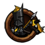

- 注意！本攻略内容为1.85版本为基础编写的攻略，新版本内容变化不在其中。
前言
首先关注贴吧，关注我的小尾巴。
初期
萌新诞生，，我们要根红苗正，客户端去app（其他服也在正规渠道）下载。这样能避免好多不必要的麻烦，比方说充值连不上，充值未到账，闪退…。
然后就是游戏了，小小军团，就是养成策略型游戏，每日的养成是胜利的基础，有条件且喜爱小小的玩家可以购买t俱乐部（十分之划算），30块钱马上能领到54钻（54算入购买成就），每天还能领到15钻。拥有了t会员，每天购买两次10钻体力是没有压力的。
这时候，将不满员，衣不蔽体，但是不要担心，除了豪，大家都一样。小小比较良心，成就奖励会有优厚的钻石赠送，三星过图还有酒杯奖励。酒杯就用于酒馆刷英雄，钻石可以用于购买5星装备以及留着购买体力，主力部队人数，或者刷酒馆。具体怎么做最好，我想说得是如果酒馆一刷一个准4星，当然酒馆好，如果你脸黑，还不如买装备和主力部队人数。我个人觉得，不缺将，不要刻意酒馆刷将，当然要是不差钱，可以刷，毕竟多一个四星，多一件5星装，初期多一件五星装所带来的装备碾压是可怕的。
下面讲讲初期4大问题：
阵型
将不满员，小兵等级低，阵型的作用微乎其微，就算你摆个口袋阵，号称吸引骑兵，捅菊花。人家要是践踏骑技能等级高，到底是你吸引别人来桶他菊花，还是别人一个“残酷践踏”自己被中心开花，还真未可知。所以初期其实按照一排肉，二排三排输出，四排骑兵，即可。当然，喜欢精益求精，没有错，不过老鸟推荐的都是中后期的阵，是否适合新人，未可知。
英雄选择
不要盲目的相信4星，刚开始接触小小的人都会以为4星强，其实不然，特别是初期，三星弓，三星火，三姐妹可不是吃素的！而且他们不占用太多资源，优先升级他们以及剑圣，兰斯洛特等aoe主动技能即可。弹道兵种—弓，弓骑，弩（一排当肉用除外）的小兵等级不用管，都是150级封顶的货。关于aoe的技能升级，先全部达到4，然后全部到6，然后挨个到7，然后挨个到8，挨个到9，挨个到10。如果你aoe多，不要只升一个。初期是aoe的世界，疯狂的a兵吧。五主力必上。
 |
 |
| 威廉姆 | 兰斯洛特 |
体力的分配
这里涉及到压级，压级意思是通过一直选择最大金币威望比的方式消费体力，使得拥有比同等级更优秀的战力。适当的压级有利于成长，这里不多说，有很多帖子介绍。我说下正常主流方法：一天2管体力刷卷，优先红卷。绿卷不用刷，每日任务有。黄卷刷10次碰运气。其他pvp，精英boss关卡。有条件，部队人数能够钻石比较好。如果条件有限，士气材料和部队人数材料缺啥就打点。
装备搭配
如果你衣不蔽体，就不谈了，随便穿，有总比没有好。如果富裕了有5星装了，注意两个方面，初期，近战堆防，切忌拆分装备，远程伤害溢出，切忌装备合一。有个不成熟的标准：近战如初期高价值英雄剑圣，兰斯洛特，堆防御和幸运攻击！防御堆到与自己队伍中最高攻击的小兵攻击值差不多即可，比方说，你部队最高攻击的小兵是矛兵860攻击，你把剑圣防御堆到760～860即可。这样的效果是pvp，对手很难破你剑圣的防，一个极限防御手拿魔王剑的剑圣初期能横扫一片！远程单位，像梅林，三星弓这种一个技能分批造成伤害的远程，最佳方案是把每批次技能伤害堆到队伍小兵最大血量的1/3。比方说，你小兵最大血量是3000，你梅林，三星火的每批次技能伤害最好是1000。不要太低，太低杀不死，更不要太高，多余浪费。当然只是参考标准，每个人心里的标准都不一样。
|
|
 | ||
| 威廉姆 | 兰斯洛特 | 萨齐 | 加拉哈德 | 尼克莱 |
中期
这时候坑已经填满，aoe随着小兵等级的提高，作用在减弱，而辅助英雄随着小兵的提升而地位上升，贴吧的很多阵容，阵型选择开始进入考虑范围，选择一款适合你的阵容，坚持到底就是你需要做的。帖子有很多介绍阵容选择，阵容系统的交流，这里也说不完，只留一句话：关注别人说得每一句话，听听，想想，试试。
三人行，必有我师！
后期
你自己就是大神！对游戏有了自己的理解。这时候你需要的是一句歌词和一个心态。“别人说得话，随便听一听，自己做决定”
心态要放端正，贴吧中“大神，请教一下……”其实在现实生活中翻译成白话就是“同志，问个路……”和人多交流，帮助别人提高自己。你不提出观点，分享心得，别人怎么知道你想什么？说出来，大家看一看是否正确。对了，大家一起进步，错了，自己改正，促进自己的进步。闭门造车，以为自己掌握了宇宙真理，刚愎自用，只会妨碍自己的提高。
- ☆搬运者☆：每个对游戏的理解不同，玩法也不同，但是通过交流和分析数据，可以更好的进行游戏！